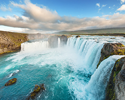
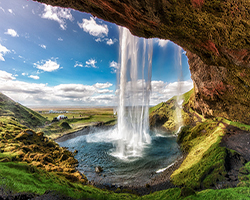

<
>
Argentine - Chute Izague
Un véritable spectacle, la preuve des forces et des merveilles de mère Nature. Une chute d'eau est l'une des créations les plus étonnantes que la nature a à offrir. La splendide puissance de l'eau qui s'écrase sur des falaises et dans les profondeurs a un effet hypnotique sur tous ceux qui ont assisté au spectacle de certaines des plus grandes chutes d'eau du monde. Il y a beaucoup de belles chutes d'eau dans le monde entier, mais voici quelques merveilles des plus incroyables chutes et cascades extraordinaires à travers le monde.
 
© 2015 Guillaume Tremel
Réalisé dans le cadre scolaire de première session au collégial.